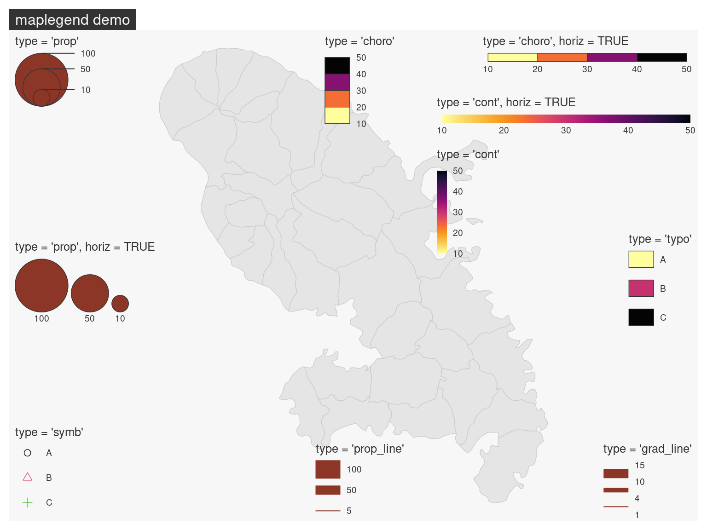

Code
library(maplegend)
library(mapsf)
m <- mf_get_mtq()
mf_map(m, col = "grey90", border = "grey80")
mf_title("maplegend demo")
# Proportional symbols
leg(type = "prop", val = c(10, 50, 100), pos = "topleft",
mar = getOption("mapsf.mar"),
title = "type = 'prop'")
leg(type = "prop", val = c(10, 50, 100), pos = "left",
horiz = TRUE, mar = getOption("mapsf.mar"),
title = "type = 'prop', horiz = TRUE")
# Choropleth
leg(type = "choro", val = c(10, 20, 30, 40, 50), pos = "top",
title = "type = 'choro'")
leg(type = "choro", val = c(10, 20, 30, 40, 50), pos = "topright",
horiz = TRUE,
title = "type = 'choro', horiz = TRUE")
# Typologie
leg(type = "typo", val = c("A", "B", "C"), pos = "right",
title = "type = 'typo'")
# Symbols
leg(type = "symb", val = c("A", "B", "C"), pos = "bottomleft",
pal = 1:3,
title = "type = 'symb'")
# Continuous
leg(type = "cont", val = c(10, 20, 30, 40, 50), pos = c(722257.6, 1640619),
horiz = TRUE,
title = "type = 'cont', horiz = TRUE")
leg(type = "cont", val = c(10, 20, 30, 40, 50), pos = c(722257.6, 1634576),
title = "type = 'cont'")
# Proportional lines
leg(type = "prop_line", val = c(5, 50, 100), pos = "bottom",
lwd = 20,
title = "type = 'prop_line'")
# Graduated lines
leg(type = "grad_line", val = c(1, 4, 10, 15), pos = "bottomright",
lwd = c(1, 5, 10),
title = "type = 'grad_line'")